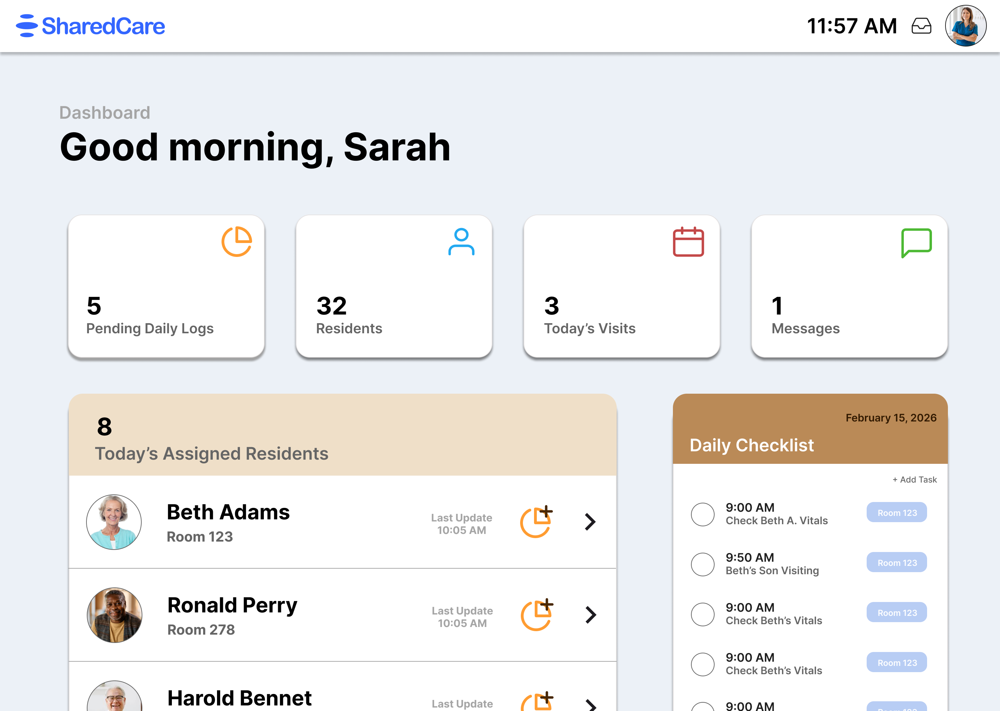

SharedCare
Caregiver-to-family communication for adult family homes and nursing home care teams.
- Role
- Front-End and Back-End Developer
- Tools
- HTML, CSS, JavaScript, Firebase, Figma
SharedCare is a Firebase-backed MVP that centralizes daily logs, visit scheduling, resident profiles, and secure messaging so care teams can share clearer updates with authorized families.
Project Details
In Progress
